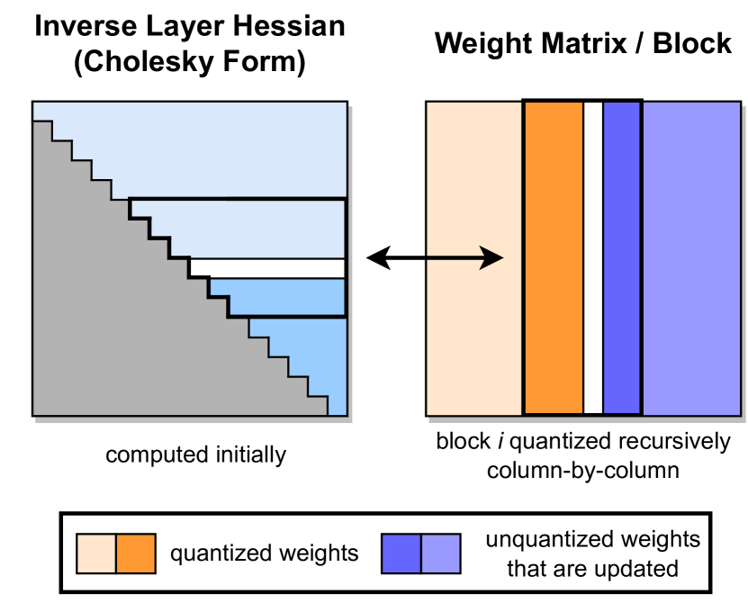

权重: float16每参数 2 字节
量化、剪枝与模型压缩
7B 模型 FP16 权重约 14GB，INT4 量化后不到 4GB——同样的模型、同样的参数，显存直接砍掉四分之三。量化是 LLM 部署最常用的压缩手段，但「掉点」和「硬件支持」是两道绕不开的坎。本节讲清楚 PTQ/QAT 的分工、GPTQ/AWQ 的差异、1.58bit 的极限在哪里，以及为什么剪枝这条路在 LLM 时代基本没跑通。
一图看懂
量化的本质是把高精度浮点数（FP16/BF16）映射到低精度整数（INT8/INT4），用更少的 bit 存同样的信息。就像把 1080p 图片压成 720p——大部分细节还在，文件小了一大截，但极端情况下会糊。训练后量化（PTQ）不改训练流程、一条命令就能跑，是部署首选；量化感知训练（QAT）在训练时模拟量化误差，精度更好但要重新训练。
- 校准数据集~128-512 条样本插入伪量化节点FP16 原始模型 / 7B ≈ 14GB
- 统计激活分布确定缩放因子
- 校准数据集 / ~128-512 条样本
继续训练微调- 插入伪量化节点
训练后量化 PTQ- FP16 原始模型 / 7B ≈ 14GB
量化感知训练 QAT- FP16 原始模型 / 7B ≈ 14GB
- 权重 → INT4/INT8
- 统计激活分布 / 确定缩放因子
权重 → INT4/INT8- 继续训练微调
量化模型7B INT4 ≈ 3.5GB- 训练后量化 PTQ
- 量化感知训练 QAT
量化基础：从 FP16 到 INT4 到底发生了什么
一个 FP16 的权重值（比如 0.3147）要变成 INT4，核心就三步：找范围、算缩放、做映射。
$$x_{\text{quant}} = \text{round}\!\left(\frac{x_{\text{fp}}}{s}\right), \qquad s = \frac{\max(|x_{\text{fp}}|)}{2^{N-1}-1}$$
其中 $s$ 是缩放因子（scale），$N$ 是目标比特数（如 INT4 时 $N=4$）。反量化时乘回 $s$ 即可。INT4 只有 16 个离散值（$-8$ 到 $+7$），所以量化误差不可避免——关键是怎么让误差落在「不影响输出质量」的区间。
用一组真实数字把这三步走一遍。假设一层里只有 4 个 FP16 权重：$[0.1,\ -0.7,\ 1.2,\ -0.3]$，要做对称 INT4 量化（$N=4$，那么 $q_{\max} = 2^{3}-1 = 7$）。第一步找范围：绝对值的最大值是 $1.2$；第二步算缩放：$s = 1.2 / 7 \approx 0.1714$；第三步做映射：每个权重除以 $s$ 再四舍五入——$0.1/0.1714 \approx 0.58 \to 1$，$-0.7/0.1714 \approx -4.08 \to -4$，$1.2/0.1714 = 7 \to 7$，$-0.3/0.1714 \approx -1.75 \to -2$。反量化回去：$1 \times 0.1714 = 0.171$、$-4 \times 0.1714 = -0.686$、$7 \times 0.1714 = 1.2$、$-2 \times 0.1714 = -0.343$。把原始值和还原值对比：$0.1 \to 0.171$、$-0.7 \to -0.686$、$1.2 \to 1.2$、$-0.3 \to -0.343$。注意两点：第一，恰好撞在格点上的值（1.2）零误差；第二，越靠近 0 的小权重，相对误差反而越大——$0.1$ 的误差是 $0.071$，相对误差高达 71%，但因为它绝对值小，对输出的绝对影响也小。这个「大权重误差小、小权重误差大但影响小」的不对称性，正是后面 INT8 章节里量化能保住精度的第一个原因。
对称量化
零点固定为 0，正负范围对称。实现简单，硬件友好，但如果权重分布偏移（大部分为正或大部分为负），会浪费量化范围。
非对称量化
引入零点（zero point），可以贴合偏移的分布，精度更好。但运算时要额外处理零点偏移，略微增加计算开销。
分组量化
不是给整层一个 scale，而是按 group（如 128 个权重一组）各算各的。粒度越细、精度越高，但存储 scale 的元数据也越多。
一句话直觉
量化就像用尺子量身高：FP16 是毫米刻度，INT4 是厘米刻度。大部分时候厘米够用，但如果你恰好站在 170.5cm 的位置，四舍五入就丢了 0.5cm——量化误差就是这么来的。
新手最容易搞错
很多新手把「量化」理解成「把模型文件变小」，然后想当然地以为推理速度也会按同样的比例变快。实际上量化的主要收益分两笔账：省显存（权重从 2 字节/参数降到 0.5 字节/参数，能塞进更小的卡、跑更长的上下文）和省带宽（Decode 阶段每生成一个 token 都要把所有权重读一遍，权重小了每步搬得就快）。如果模型本来就没超出显存、而且你的场景是 Prefill 占主导的计算密集任务，量化带来的速度提升可能非常有限——所以「量化后变快」不是自动成立的，要看你卡在哪：卡在显存，量化立竿见影；卡在算力，量化帮助不大。
PTQ vs QAT：两条路的分工
量化方法按「是否需要训练」分成两大阵营，部署时选哪条取决于你有没有训练资源和时间。
| 维度 | 训练后量化 PTQ | 量化感知训练 QAT |
|---|---|---|
| 是否需要训练 | 不需要，只需少量校准数据 | 需要，完整训练或微调流程 |
| 校准数据量 | 128-512 条代表性样本 | 原始训练数据或高质量子集 |
| 精度损失 | INT8 几乎无损；INT4 有 0.5-2 点掉点 | INT4 可做到接近无损 |
| 耗时 | 分钟级 | 小时到天级 |
| 适用场景 | 快速部署、通用模型 | 精度敏感场景、极端比特率 |
| 代表方法 | GPTQ、AWQ、SmoothQuant | LLM-QAT、BitNet 训练原生量化 |
实践中 90% 的部署场景用 PTQ 就够了。QAT 主要用在两个地方：一是要把模型压到 INT4 以下（如 3bit、2bit）且 PTQ 掉点太严重时；二是像 BitNet 那样从头用低精度训练的「原生量化」模型，权重在训练时就是三值（-1, 0, 1），不存在「量化后掉点」的问题。
- 校准数据集128-512 条样本
- 前向推理收集激活分布
- 校准数据集 / 128-512 条样本
- 确定缩放因子 sper-channel / per-group
- 前向推理 / 收集激活分布
- 权重映射到 INT4round(x/s)
- 确定缩放因子 s / per-channel / per-group
- 构造量化模型
- 权重映射到 INT4 / round(x/s)
- 反量化验证在评测集上查精度回退
- 构造量化模型
- 部署
- 反量化验证 / 在评测集上查精度回退掉点可接受
换 AWQ/GPTQ或上 QAT- 反量化验证 / 在评测集上查精度回退掉点过大
GPTQ 与 AWQ：INT4 量化的两大主力
GPTQ 和 AWQ 是 2024-2026 年 LLM 部署中最常用的两种 PTQ 方法，它们解决的问题一样（INT4 权重量化），但思路完全不同。
GPTQ：基于二阶信息的逐层量化
GPTQ 的核心思想来自 OBQ（Optimal Brain Quantization）：量化不是一个一个权重独立的，改了一个权重会影响其他权重的最优值。它利用 Hessian 矩阵的逆来捕捉权重之间的相互作用，逐列量化并在量化每一列后更新剩余权重来补偿误差。
$$w_{\text{comp}} = w_{\text{orig}} - \frac{w_q - w_{\text{orig}}}{[H^{-1}]_{ii}} \cdot [H^{-1}]_{:,i}$$
其中 $H$ 是 Hessian 矩阵（用校准数据计算），$w_q$ 是量化后的权重，$w_{\text{comp}}$ 是补偿后的剩余权重。GPTQ 量化一层通常只需几秒到几十秒，效果接近原始模型。
光看公式容易晕，下面这张 GPTQ 论文里的原图把整个量化流程画了出来。它是理解「为什么 GPTQ 比朴素量化准」的最直接证据——注意看图中那些从已量化列伸向未量化列的箭头：误差不是被忽略，而是被主动「推」给了后面的权重。

逐块读这张图，抓住三个要素。第一，图的输入是一整层权重矩阵（图中横向排列的大方块），量化是「逐列」（column-wise）进行的，而不是把整个矩阵当成一个整体统一缩放——逐列意味着每一列都有自己独立的 scale，能把量化范围留给「这一列自己的关键值」，这是分组量化思想的极致形态（每列一组）。第二，箭头表示误差补偿的方向：量化完第 $i$ 列后，算法不是直接进入第 $i+1$ 列，而是先计算「这一列量化造成了多大误差」，再利用 Hessian 矩阵的逆把这个误差「写回」到尚未量化的列上（图中从已处理列指向未处理列的箭头）。直观理解：就像往一堆秤好的米里少放了 2 克，接下来每袋米都补回 0.5 克，把总误差摊平。第三，图中括号标注的顺序体现了「先算好再替换」的两步式——先决定所有列的量化结果，再用补偿更新剩余权重，从而避免「边量边改」带来的漂移。
这张图还揭示了 GPTQ 与朴素量化的本质差异：朴素量化是「每个权重独立地四舍五入」，误差是散落的、不可控的；GPTQ 把量化当成一个带补偿的全局优化问题——它不在乎单个权重错多少，只在乎整层输出的误差能否被后续权重吸收。代价是它需要算 Hessian 矩阵的逆（这正是它比 AWQ 慢的原因，也是它需要校准数据的根本原因），收益是 INT4 下能把精度损失压到接近无损。读图时要记住一点：图中画的「误差传播」方向是从已量化列流向未量化列，这对应实现里「从前往后逐列处理、每次补偿剩余部分」的实际流程，理解了这条因果链，就理解了 GPTQ 的全部设计。
AWQ：保护重要权重
AWQ（Activation-aware Weight Quantization）的观察更直觉：不是所有权重都同等重要，那些被大激活值乘到的权重，量化误差会被放大。AWQ 通过校准数据找到这些「显著权重」（salient channels），对它们做等价缩放保护，而不需要做反向传播。
- 校准数据前向推理校准数据算 HessianAWQ 量化流程GPTQ 量化流程
- 识别显著通道激活值大的位置
- 校准数据 / 前向推理
逐列量化二阶补偿- 校准数据 / 算 Hessian
- 等价缩放保护重要权重
- 识别显著通道 / 激活值大的位置
更新剩余权重抵消误差- 逐列量化 / 二阶补偿
- INT4 量化不重要的正常量化
- 等价缩放 / 保护重要权重
量化与压缩方法全景
把本节涉及的压缩手段放进一张图里，能看清它们的位置与关系——量化是主线，剪枝和蒸馏是旁支，BitNet 是另一条极端的训练范式路线：
核心主题模型压缩
01量化 Quantization
- PTQ
- QAT
- GPTQ
- AWQ
- KV 量化
02极限压缩
- BitNet 1.58bit
03剪枝 Pruning
- 结构化剪枝
- 非结构化剪枝
04蒸馏 Distillation
- 响应蒸馏
- 思维链蒸馏
| 维度 | GPTQ | AWQ |
|---|---|---|
| 核心思想 | 二阶信息逐列补偿 | 激活感知的等价缩放 |
| 是否需要反向传播 | 否 | 否 |
| 量化速度 | 较慢（需算 Hessian 逆） | 较快 |
| INT4 精度 | 优秀 | 优秀，通常略优于 GPTQ |
| INT3 表现 | 掉点明显 | 比 GPTQ 更稳健 |
| 社区支持 | vLLM、AutoGPTQ | vLLM、llama.cpp、AutoAWQ |
常见误区
量化不是免费的午餐。INT4 量化在简单任务（MMLU、常识问答）上几乎无损，但在复杂推理（数学、代码、多步推理）上掉点可能达 2-5 个百分点。推理模型（如 R1 类）对量化更敏感，因为长思维链中的误差会累积放大。上线前务必在你的实际评测集上验证，不要只看通用 benchmark。
KV Cache 量化：被忽视的显存大户
量化权重只是第一步。在长上下文推理中，KV Cache 的显存占用可能超过权重本身——7B 模型在 32K 上下文下，KV Cache 可达 4-8GB。KV Cache 量化是把 KV Cache 从 FP16 压到 INT8 或 INT4，直接减少推理时的显存峰值。
$$\text{KV Cache 显存} = 2 \times n_{\text{layer}} \times n_{\text{kv-head}} \times d_{\text{head}} \times \text{seq\_len} \times \text{bytes\_per\_element}$$
FP16 时 bytes_per_element = 2，INT8 时为 1，INT4 时为 0.5。KV Cache 量化通常比权重量化更安全，因为 Key 和 Value 是中间激活而非最终输出，量化误差的影响链更短。但要注意：Key 的量化比 Value 更敏感，因为注意力分数直接依赖 Key。
展开：vLLM 中开启量化的实际配置
# INT4 权重量化（AWQ 格式）
vllm serve --model Qwen/Qwen2.5-7B-Instruct-AWQ \
--quantization awq \
--dtype float16
# INT4 权重量化（GPTQ 格式）
vllm serve --model Qwen/Qwen2.5-7B-Instruct-GPTQ-Int4 \
--quantization gptq \
--dtype float16
# KV Cache INT8 量化（配合权重量化使用）
vllm serve --model Qwen/Qwen2.5-7B-Instruct-AWQ \
--quantization awq \
--kv-cache-dtype fp8 # 或 int8，取决于硬件支持注意 FP8 KV Cache 需要 Ampere 架构以上的 GPU（A100/H100），INT8 KV Cache 的硬件兼容性更广。具体支持矩阵以 vLLM 官方文档为准。
1.58bit 与极限压缩：BitNet 的路线
INT4 已经是 4 bit，能不能更激进？BitNet 给出了一个大胆的答案：1.58 bit（即三值 $\\{-1, 0, 1\\}$，$\\log_2 3 \\approx 1.58$）。但 BitNet 不是对已有模型做量化，而是从头训练时就让权重只有三个值。
BitNet b1.58 的核心
权重只有 $\\{-1, 0, 1\\}$ 三值，推理时矩阵乘法变成加减法，不需要浮点乘法。训练时用 STE（Straight-Through Estimator）绕过不可导的量化函数。
为什么是 1.58 而不是 1
二值化（$\\{-1, 1\\}$）信息损失太大；加入 0 后表达能力显著提升，且 $\\log_2 3$ 这个比特数在信息论上刚好是三值编码的最优解。
BitNet 的意义在于它证明了「低精度不只是压缩手段，可以是训练范式」——权重在训练时就活在低精度空间里，不存在量化掉点的问题。代价是它不能用于已有模型（你没法把 Llama 的权重量化到三值而不崩溃），需要从头训练。目前 BitNet 主要在研究阶段，大规模商用部署还需等待硬件生态跟进。
剪枝与稀疏化：为什么在 LLM 上没能跑通
剪枝（Pruning）在 CNN 时代是经典压缩手段——去掉不重要的连接，让模型变稀疏，理论上可以大幅减少计算量。但在 LLM 时代，这条路基本没跑通。原因有三层：
- 精度掉点LLM 参数高度耦合剪掉任何一部分都会连锁影响恢复训练成本高剪枝后需要大量重新训练成本不亚于从头训硬件加速缺位非结构化稀疏 GPU 不加速2:4 稀疏只加速矩阵乘不覆盖注意力与 FFN 全链路
- 剪枝路线在 LLM 上搁置
- 精度掉点 / LLM 参数高度耦合 / 剪掉任何一部分都会连锁影响
- 恢复训练成本高 / 剪枝后需要大量重新训练 / 成本不亚于从头训
- 硬件加速缺位 / 非结构化稀疏 GPU 不加速 / 2:4 稀疏只加速矩...
困境一：掉点严重，且不可预测
CNN 的卷积核相对独立，剪掉一个 filter 影响有限。但 Transformer 的注意力机制让所有 token 之间产生全局交互，FFN 层的参数也高度耦合。非结构化剪枝（随机置零个别权重）在 50% 稀疏度下，LLM 在复杂任务上的掉点可达 5-15 个百分点，远超 INT4 量化的损失。
困境二：恢复训练的成本不亚于重新训练
剪枝后通常需要 fine-tune 恢复精度（称为「恢复训练」）。在 CNN 上几百步就能恢复，但在 LLM 上，因为参数耦合度高、知识密集度高，恢复训练需要的算力和数据量接近继续预训练——这意味着剪枝省下的推理成本可能还不如恢复训练花的训练成本。
困境三：硬件加速基本不存在
这是最致命的。剪枝的收益前提是「稀疏矩阵运算更快」，但主流 GPU 的矩阵乘单元（Tensor Core）是为稠密矩阵设计的：
| 稀疏类型 | 硬件支持 | 实际加速 |
|---|---|---|
| 非结构化稀疏（随机置零） | 无原生支持，需特殊格式 | 不加速甚至更慢（稀疏格式有额外开销） |
| 2:4 半结构化稀疏 | NVIDIA Ampere+ 原生支持 | 仅矩阵乘 2x 理论加速，实际约 1.3-1.5x |
| 结构化稀疏（整行/整列置零） | 可通过减少维度实现 | 等价于缩小模型，不算真正的剪枝 |
2:4 稀疏（每 4 个连续元素中恰好 2 个为零）是唯一有硬件加速的方案，但它只加速 GEMM（通用矩阵乘），而 LLM 推理的瓶颈在 Decode 阶段是访存带宽受限而非计算受限——2:4 稀疏压缩了计算量却不能压缩访存，所以对推理延迟几乎没有改善。更关键的是，2:4 稀疏的 50% 稀疏度在 LLM 上的掉点仍然不可忽视。
结论
在 LLM 时代，压缩的主流路线是量化（不改结构、不改训练、硬件友好）和蒸馏（换小模型继承大模型能力，见 知识蒸馏与能力迁移）。剪枝和稀疏化在研究上仍有价值（特别是结构化稀疏与硬件协同设计），但在工程实践中几乎不在 LLM 部署的选项里。如果你看到「LLM 剪枝 50% 无损」的宣传，先问三件事：在什么 benchmark 上测的？恢复训练花了多少算力？推理时真的更快了吗？
量化选型决策树
| 你的场景 | 推荐方案 | 预期掉点 |
|---|---|---|
| 快速部署、通用对话 | AWQ INT4 或 GPTQ INT4 | <1 点（MMLU） |
| 长上下文、显存紧张 | INT4 权重 + INT8 KV Cache | 1-2 点 |
| 推理模型（R1 类） | INT8 或 FP8，谨慎用 INT4 | INT4 可能掉 3-5 点 |
| 极致压缩、可接受训练成本 | QAT INT4 或更低 | 可接近无损 |
| 从头训练、追求极致 | BitNet 1.58bit 原生量化 | 训练时即低精度 |
展开：手动实现一个对称量化（理解 scale 怎么来）
公式里那个缩放因子 $s$ 看似简单，但「按什么粒度算」直接决定精度。下面是一段对称量化的参考实现（示意，生产用 GPTQ/AWQ 工具链而非手搓）：
import numpy as np
def symmetric_quantize(weight, bits=4, group_size=128):
"""分组对称量化：每 group_size 个权重共享一个 scale
Args:
weight: 形状 (out_features, in_features) 的 FP16 权重
bits: 目标比特数（INT4 -> 4）
group_size: 分组大小，越小精度越高、元数据越多
Returns:
q: 量化后的整数张量
scales: 每组的缩放因子
"""
qmax = 2 ** (bits - 1) - 1 # INT4 对称: [-7, 7]
out, inp = weight.shape
weight = weight.reshape(out, inp // group_size, group_size)
# 每组按最大绝对值定 scale
amax = np.max(np.abs(weight), axis=-1, keepdims=True)
scale = amax / qmax
scale = np.where(scale == 0, 1.0, scale) # 防除零
q = np.round(weight / scale).clip(-qmax, qmax)
return q.astype(np.int8), scale.astype(np.float16)
def dequantize(q, scale, group_size=128):
"""反量化还原近似权重"""
w = (q.astype(np.float32) * scale).reshape(q.shape[0], -1)
return w注意两个工程细节：第一，分组（group）越小精度越高，但每组的 scale 也要存下来，group_size=128 是精度与开销的常见折中；第二，零点（zero-point）对 LLM 权重收益不大，所以对称量化（zero=0）是主流，省掉零点运算也更硬件友好。真正的 GPTQ/AWQ 还会在量化过程中做误差补偿或通道保护，比这段手搓版稳得多。
INT8 量化误差的数学直觉：为什么看相对误差
很多人对量化的第一个疑问是「INT8 只有 256 个取值，为什么掉点能控制在 1% 以内？」这需要从数值角度建立直觉：量化的误差度量不是绝对误差，而是相对误差，而且它随权重幅度自适应。
对称量化把 $[-a_{\max}, a_{\max}]$ 的权重范围映射到 $[-127, 127]$ 的整数格点，缩放因子 $s = a_{\max}/127$。任何一个权重 $x$ 量化后反量化得到 $\hat{x}$，其绝对误差 $|x - \hat{x}| \le s/2$——但注意，$s$ 是按整层的最大绝对值定的。如果一个权重恰好是 $0.9 \times a_{\max}$，它的相对误差只有 $0.5/127 \approx 0.4\%$；而一个只有 $0.01 \times a_{\max}$ 的小权重，相对误差可能高达几十%。换句话说，量化对大权重是温和的、对小权重是残酷的——这正好和神经网络的性质互补：大权重对输出影响大、误差小；小权重本就可有可无、误差大也影响有限。这是量化能保住精度的第一个原因。
第二个原因是误差的统计平均与抵消。Transformer 的线性层是几千甚至上万维的向量点积，量化误差在每个维度上是近似独立的随机变量，点积求和时它们按 $\sqrt{d}$ 增长而信号按 $d$ 增长，信噪比随维度数提升。所以越宽的层（$d$ 越大），量化越安全——这也是为什么 7B 以上模型量化掉点普遍比小模型小：层更宽、分布更集中。
第三个原因是权重的分布形状。LLM 权重近似拉普拉斯分布，绝大多数权重集中在小幅值区，少量是「尾巴」上的大值。按最大绝对值定 scale 意味着大量小权重被压缩到很少几个整数格点上，浪费了量化范围。AWQ 的「按激活感知挑选显著通道」、GPTQ 的「按 Hessian 二阶补偿」，本质上都在对付同一个问题：让有限的量化范围尽量覆盖「对输出真正重要」的那部分权重。理解这一点，就能看懂为什么「无校准的朴素量化」和「AWQ/GPTQ 量化」的差距可以高达好几个点——前者把精度浪费在均值上，后者把精度留给关键值。
最后要提醒：相对误差直觉只适用于权重。激活（activation）的量化是另一回事——激活的分布随输入变化、范围更宽、且常有少数极端值（outlier）拉大 scale，导致大部分正常激活被压进几个格点。这正是 INT8 激活量化远比权重量化难、需要 SmoothQuant 这类「把激活的峰值削平、转移到权重」技巧的原因。
逐层量化 vs 全模型量化：误差累积与校准
量化策略上，一个常被忽略的差异是「逐层（layer-wise）」和「全模型（end-to-end）」两种校准方式。它们不是实现细节，而是直接决定了量化误差的形态。
逐层量化：逐层地用校准数据跑前向，收集每一层的权重/激活分布，单独确定该层的 scale。优点是每层的误差是「局部的」，不依赖其他层的量化结果；缺点是它假设「各层独立」，忽略了层与层之间的误差传导——前一层量化引入的误差，会被后一层放大或抑制，逐层校准无法感知这一点。
全模型量化：一次把整个模型量化，用校准数据端到端地跑，观察最终输出的误差，再据此调整各层 scale。理论上更优（直接优化全局误差），但实践中因为需要反向传播或多次迭代，计算成本高。GPTQ 实际上走的是「逐层 + 残差补偿」的折中——每层量化时把误差「注入」下一层的输入，模拟全局传导，再用 Hessian 做二阶补偿，从而在逐层的成本下逼近全模型的精度。AWQ 则是「逐层校准 + 激活感知」，用激活分布而不是权重分布来定保护策略。
校准数据的选择对两种方式都至关重要。校准集必须代表真实推理时的输入分布：如果模型部署后主要处理中文代码、而校准用的是英文对话，量化的 scale 就会偏向错误的分布，上线后掉点可能比校准集上多出一大截。实践上选 128-512 条来自真实流量采样的样本，比用通用 benchmark 数据更可靠。还有一个隐蔽问题：校准集越小，scale 越容易过拟合到少数样本的极端值；校准集越大，时间越长（校准要走前向）。所以「校准集大小」也是精度与成本之间的一个权衡，不是越大越好。
对推理模型（R1 类）还有一个额外提醒：这类模型生成的是长思维链，量化误差会在几百上千步的生成中逐步累积放大——校准集上掉 1 个点，长链推理任务上可能掉 3-5 个点。对这类模型，优先选 INT8/FP8 而不是 INT4，并把校准集换成推理任务特有的「思维链样本」，而不是通用问答样本。
FP8 与硬件代次：量化不是纯软件问题
量化还有一个容易被忽视的约束：它绑定了硬件能力。INT4 权重量化把权重存成 4 bit，但 GPU 执行时通常还是要反量化成 FP16/BF16 再算（除非有专门的低精度 Tensor Core 路径）；而 FP8 是 Hopper 及以上架构原生支持的计算格式——H100 有专门的 FP8 Tensor Core，可以在不反量化的前提下直接做矩阵乘，速度和内存占用同时受益。
这带来一个现实的选择：在 H100 集群上，FP8 往往是比 INT4 更好的选择——FP8 有 Hopper 原生加速，INT4 却要反量化回高精度计算，两者的端到端收益可能反转。在 A100（Ampere）上则相反：Ampere 没有 FP8 Tensor Core，FP8 输入会被软件模拟或转成其他格式，效率大打折扣，此时 INT4/INT8 反而是更稳的选择。所以在选量化位宽之前，先查硬件的原生支持矩阵，否则「看起来更小的位宽」未必「更快」。
KV Cache 量化也有同样的硬件依赖：FP8 KV Cache 需要 Ampere+ 架构的相应支持，INT8 的兼容性更广。这解释了为什么量化方案的文档里总有一张「硬件支持矩阵」——它不只是市场宣传，而是决定了同一份量化模型在不同代 GPU 上会不会触发静默回退（见 FlashAttention 一节的讨论：同样的回退机制在量化后端的兼容性上同样存在）。部署前用目标硬件的真实 profiling 验证一次，比翻遍文档更可靠。
最后把量化的选型思路收束成一句话：先确定部署硬件与推理引擎（决定位宽可选项），再用真实流量校准并量化（决定精度），最后在目标硬件上 profiling（决定是否触发回退）。三个环节顺序不能乱——先选位宽再校准，等于用错误的约束做优化。量化不是「把文件变小」这么简单，它是一套和硬件、引擎、数据分布深度绑定的系统工程，值得花时间把每一环都验证到位。只有三个环节全部跑通，量化的收益才算真正落地。
要点速查
- 本质：量化是「不改能力只改表示」的压缩路线，用更少 bit 表示同样的权重值，显存和带宽直接按比例下降。
- PTQ vs QAT：PTQ（GPTQ/AWQ）分钟级完成、90% 场景够用；QAT 需训练但精度更好，用于极端比特率或精度敏感场景。
- GPTQ vs AWQ：GPTQ 靠二阶信息逐列补偿，AWQ 靠激活感知保护重要权重。INT4 下 AWQ 通常略优，但差异不大，选哪个看生态支持。
- KV Cache 量化：长上下文下 KV Cache 可能比权重还大，量化 KV Cache 是显存优化的必选项。
- 1.58bit：BitNet 的三值训练范式，不是量化已有模型而是从头训练，目前研究阶段为主。
- 剪枝没跑通：掉点严重、恢复训练贵、硬件不加速——三重困境让剪枝在 LLM 上基本搁置，压缩首选量化和蒸馏。
- 常见坑：推理模型对量化更敏感（长链误差累积）；Key 的量化比 Value 敏感；2:4 稀疏只加速计算不加速访存，对 Decode 无帮助。
- 手算心法：量化三步「找范围→算 scale→round」；撞在格点上的值零误差，靠近 0 的小权重相对误差大但绝对影响小——量化对大权重温和、对小权重残酷，恰好与神经网络「大权重更重要」的性质互补。
关键问题与边界
Q1：PTQ 和 QAT 的区别是什么？
标准回答：PTQ 在训练完成后直接量化，成本低、部署快，但依赖校准数据并可能掉点；QAT 在训练或微调过程中模拟量化误差，让模型提前适应低比特表示，通常精度更好，但训练成本更高。
Q2：GPTQ 和 AWQ 的核心思路有什么不同？
标准回答：GPTQ 使用近似二阶信息逐层量化并补偿误差，重点是让权重重构误差较小；AWQ 根据激活统计识别重要通道，对相关权重进行保护，强调权重对真实激活分布的敏感性。两者都依赖具体 kernel 和硬件，不能只凭 bit 数判断最终速度。
追问：为什么 INT4 不一定比 FP16 快四倍？
位宽下降首先减少的是权重存储和搬运量，端到端速度还受反量化、矩阵乘 kernel、batch、序列长度、KV Cache 和内存访问模式影响。如果硬件没有高效 INT4 Tensor Core，量化甚至可能只省显存而不提速。
Q3：权重量化和 KV Cache 量化解决的是同一个问题吗？
标准回答：不是。权重量化主要降低模型常驻权重显存和 Decode 阶段的权重搬运；KV Cache 量化主要降低随上下文长度和并发增长的缓存显存。长上下文服务可能更受 KV Cache 约束，不能只量化权重。
常见误区：BitNet 1.58bit 是从头训练的三值权重路线，不是把一个已有 FP16 模型简单转换成 1.58 bit。
参考文献与延伸阅读
- GPTQ: Accurate Post-Training Quantization for Generative Pre-trained Transformers — 逐层二阶补偿量化，本页论文原图来源 · arXiv:2210.17323
- AWQ: Activation-aware Weight Quantization for LLM Compression and Acceleration — 激活感知的权重保护 · arXiv:2306.00978
- BitNet: Scaling 1-bit Transformers for Large Language Models — 1.58bit 原生低精度训练 · arXiv:2310.11453
- SmoothQuant: Accurate and Efficient Post-Training Quantization for Large Language Models — 激活平滑的 INT8 量化 · arXiv:2211.10438
- LLM.int8(): 8-bit Matrix Multiplication for Transformers at Scale — 不掉点的 INT8 推理 · arXiv:2208.07339
- NVIDIA 2:4 Structured Sparsity 文档 — 硬件支持的稀疏格式说明 · NVIDIA PTX 文档
- AutoGPTQ 官方仓库 — GPTQ 量化与推理的主流实现 · github.com/AutoGPTQ/AutoGPTQ
- llama.cpp 官方仓库 — GGUF 量化格式与 llama.cpp 生态的起点 · github.com/ggml-org/llama.cpp
接下来
量化解决了「模型怎么变小」的问题，但「模型怎么跑得快」是另一回事——推理引擎的连续批处理和 KV Cache 调度才是吞吐的关键，见 推理引擎。服务化部署的 SLO 设计和成本三角见 服务化与推理经济学。压缩的另一条路——换小模型继承大模型能力——见 知识蒸馏与能力迁移。
权威延伸资料
围绕“量化、剪枝与模型压缩”继续深入
本章从模型压缩、KV Cache、推理引擎、投机解码和端侧部署几个角度回答同一个问题：怎样以更少显存和更低延迟提供可接受的能力。
阅读提示：先定义服务约束（质量、TTFT、吞吐、显存和成本），再选量化、批处理、缓存或硬件方案，避免只比较单一速度数字。
- GPTQ: Accurate Post-Training Quantization for Generative Pre-trained Transformers ↗
基于近似二阶信息的后训练量化代表作，解释 4-bit 权重量化的误差补偿。
- AWQ: Activation-aware Weight Quantization ↗
保护激活显著权重的量化方法，适合比较 GPTQ、AWQ 与不同推理后端。
- SmoothQuant: Accurate and Efficient Post-Training Quantization ↗
将量化难度从激活迁移到权重，为 W8A8 推理提供工程路径。
- vLLM Documentation ↗
连续批处理、PagedAttention、量化和 OpenAI-compatible server 的实践入口。
- FlexGen: High-Throughput Generative Inference of Large Language Models ↗
在 GPU、CPU 和磁盘之间进行 offload 的系统设计，适合理解端侧与低显存部署。
资料优先选用原始论文、官方文档、大学课程和公共机构材料；链接按 2026-08-10 检索，具体版本以来源页面为准。
主题级技术深化
围绕“量化、剪枝与模型压缩”继续深入
发展脉络
量化从 GPTQ/AWQ 的权重后训练量化，发展到 SmoothQuant、KV quant、FP8/FP4 和量化感知训练。
机制抓手
分别量化权重、激活和 KV；校准集决定 scale，异常通道会导致误差集中，per-channel/group-wise 颗粒度影响 kernel 效率。
工程权衡
更低 bit 减少显存和带宽，却可能损害长上下文、稀有 token 和推理模型的细粒度概率；端到端吞吐不只由 bit 数决定。
前沿观察
W4A8、FP4 tensor core、动态激活量化和 KV 压缩快速发展，应同时报告 perplexity、任务准确率和实际 tokens/s。
实践检查对同一模型比较 FP16、W8A8、W4A16 的误差、显存、首 token 延迟和长上下文退化。